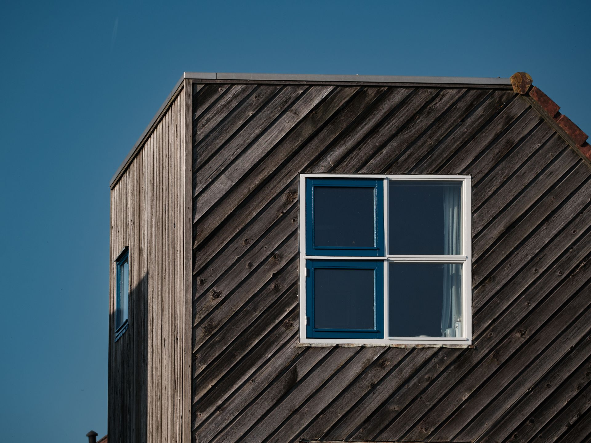
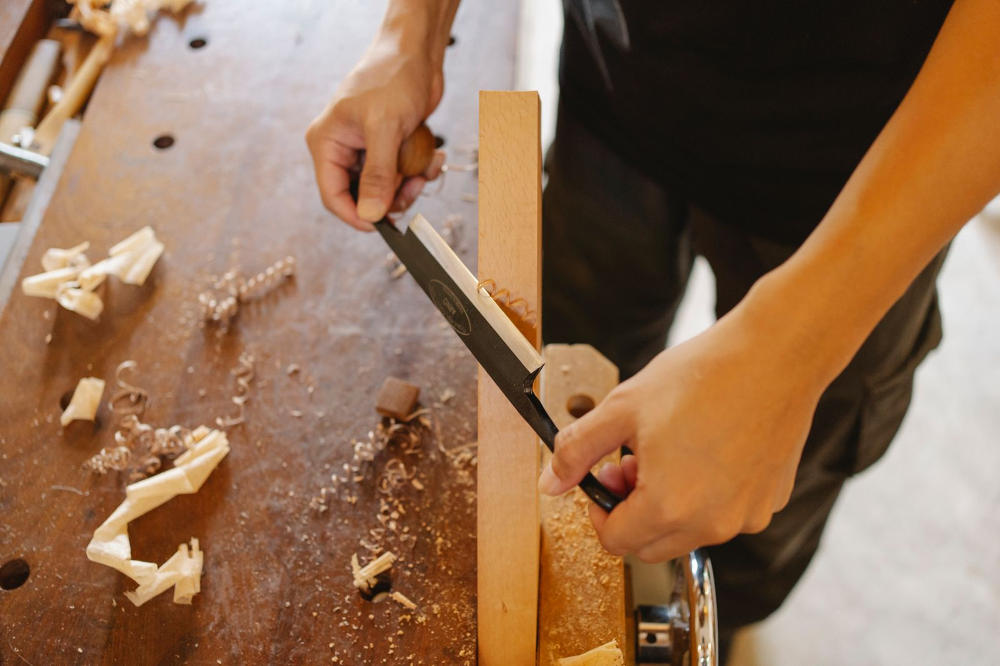
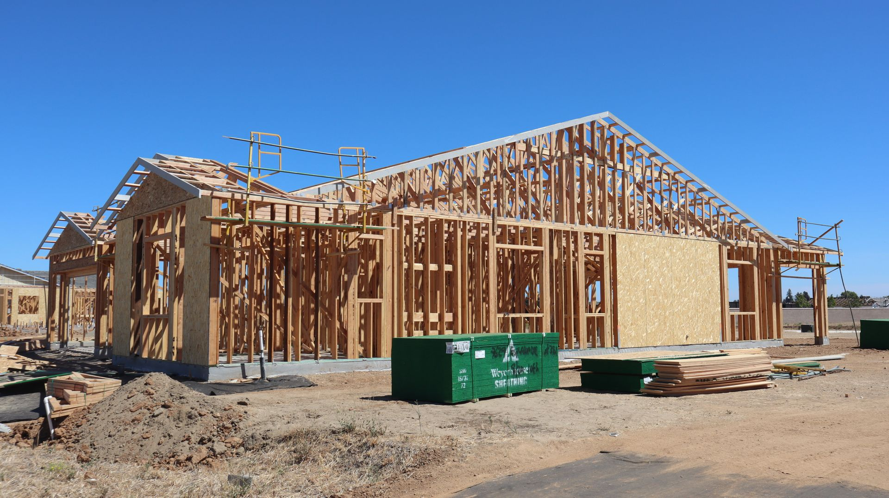

専属チームの一貫施工
設計士・現場監督・職人が同じチームで最後まで担当。伝達ロスのない、責任あるものづくりを徹底します。


ABOUT US
木結-KIYUI-建築工房は、1990年の創業以来、地域のお客様と直接向き合いながら家づくりを続けてきました。 流行のデザインをなぞるのではなく、そこに住むご家族の時間や動線をじっくり伺い、木という素材の性質を熟知した職人が、 一邸ごとに設計から施工、アフターメンテナンスまで一貫して手がけます。
大手ハウスメーカーにはない小回りの良さと、専属の建築士・職人による確かな技術。 「相談してよかった」と思っていただける対話を、家づくりの第一歩に置いています。
「住まいは、完成した日がゴールではなく、暮らしのスタート地点です。」 代表 / 一級建築士 木下 誠一
WHY CHOOSE US
設計士・現場監督・職人が同じチームで最後まで担当。伝達ロスのない、責任あるものづくりを徹底します。
気候風土に合った地域産の木材を厳選使用。調湿性・耐久性に優れた、長く住み継げる構造体に。
工事項目ごとの内訳を明示し、追加費用が発生する場合も事前にご説明。安心してお任せいただけます。
定期点検とアフターサポートで、住まいの「その後」まで伴走。困ったときにすぐ相談できる距離感を大切に。
SERVICES
敷地条件やご家族の暮らし方をもとに、一から設計するフルオーダーの家づくり。自由設計だからこそ叶う、理想の間取り。
既存の住まいの骨格を活かしながら、間取り・断熱・水まわりを刷新。築年数を重ねた家に、新しい暮らしやすさを。
カフェ・クリニック・オフィスなど、業態に合わせた内装デザインと施工。ブランドの世界観を空間として表現します。
FLOW
フォームまたはお電話にて、ご希望の内容や時期をお聞かせください。
専属スタッフが直接伺い、敷地や既存建物の状況を丁寧に確認します。
ご要望を反映した設計プランと、内訳の明確なお見積りをご提示します。
専属チームが最後まで施工を担当。竣工後も定期点検で長くサポートします。

FREE CONSULTATION
ご相談・お見積りは無料です。オンライン相談も承っております。